Тематические туры
Путешествия, о которых вы мечтали
Уникальные авторские туры по любимым вселенным: от Средиземья до далекой
галактики.
Окунитесь в легенды, станьте частью историй
О нас
«Междумирье Travel» — туристическая компания для тех, кому стало тесно в привычном мире.
Мы организуем авторские путешествия в самые удивительные уголки известных вселенных: от уютных холмов Шира и волшебных озёр Хогвартса до Вольных городов, Дотракийского моря и руин древней Валирии. Наши маршруты — это не просто экскурсии, а полноценное погружение в атмосферу места: с аутентичной кухней, традициями, праздниками, приключениями и тщательно продуманными деталями.
Как мы это делаем — секретный авторский рецепт «Междумирья». Мы объединяем профессиональную туристическую организацию, тематический дизайн, работу с местными гидами, гастрономические впечатления и немного той самой магии, которую невозможно найти в обычных путеводителях.
Мы заранее продумываем всё: где вы остановитесь, что попробуете, с кем познакомитесь и как вернётесь домой — желательно вовремя, с сувенирами и без проклятий.
Междумирье Travel — путешествия, о которых раньше можно было только читать.
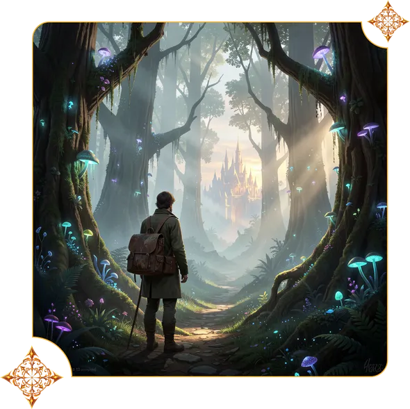
Популярные направления
Все направления-
Обзорный тур: Семь столиц Вестероса
Тур по всем столицам Семи Королевств. Самый полный маршрут.
-
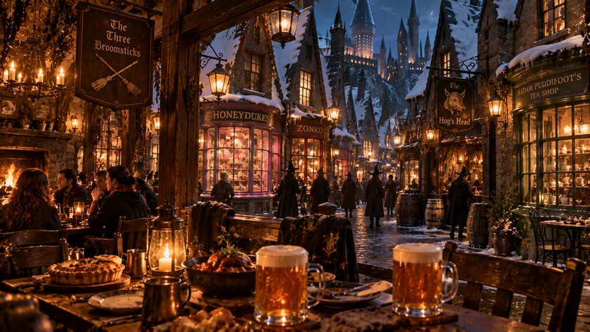
Гастротур по заведениям Хогсмида
Мир волшебства и гастрономических удовольствий.
-
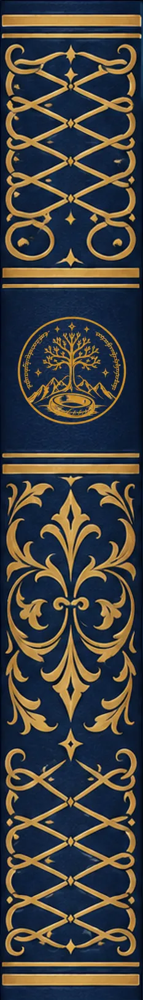
Гондор: белые города и королевские дороги
Величественные крепости и исторические дороги юга Средиземья.
-
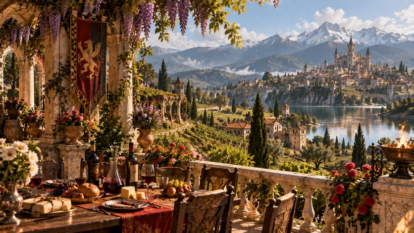
Винный тур и дегустации в Туссенте
Винодельни Кастель Равелло и Корво Бьянко, дегустация редких вин.
-
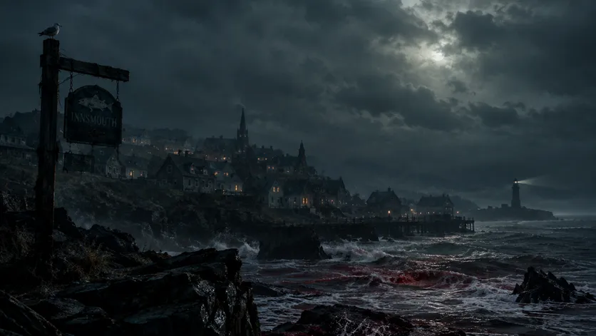
Иннсмут: морской курорт с семейным сюрпризом
Экскурсионный тур в рыбацкий городок, старые гавани, прогулка до Рифа Дьявола.
-
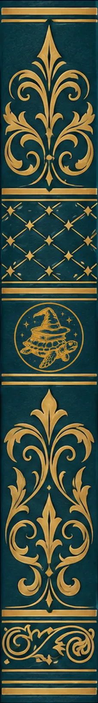
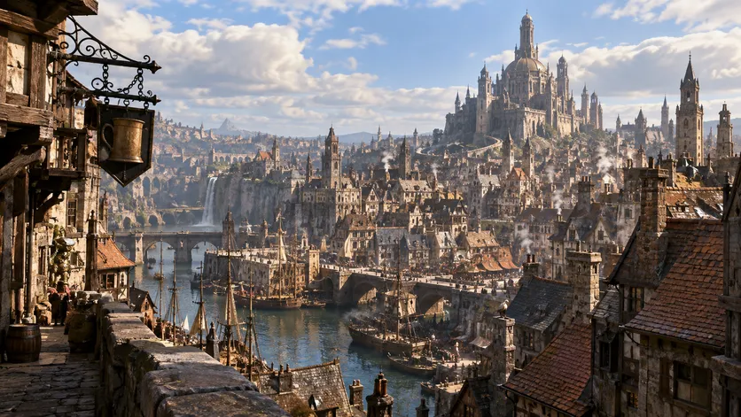
Анк-Морпорк: город возможностей и мелких краж
Экскурсия по Невидимому университету, улице Разбойников и самым подозрительным закоулкам города.
Почему мы?
-
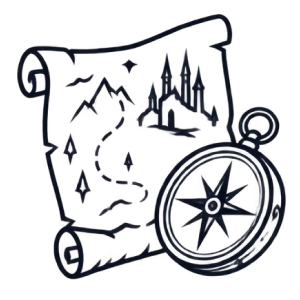
Индивидуальный подход
Подбираем туры под ваш уровень смелости — от семейных прогулок по Набу до экспедиций, где вероятность возвращения обсуждается отдельно.
-
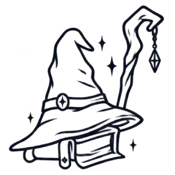
Опытные гиды
Сотрудничаем только с профессиональными местными гидами-носителями языка (включая высокий варирийский, парселтанг и квенья).
-
Безопасность
Предупреждаем обо всех рисках заранее — включая проклятия, политические интриги, внезапные пророчества и вероятность встретить древнее зло.
-
Под ключ
Берём на себя маршрут, билеты, проживание, питание и возвращение из другого измерения. Ваша единственная задача — получить максимум впечатлений
Отзывы
-
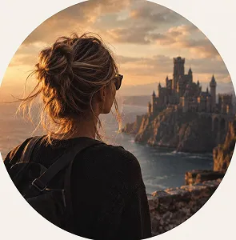
Семь столиц Вестероса
Семь столиц Вестероса Винтерфелл, Орлиное Гнездо, Риверран, Утес Кастерли, Хайгарден, Штормовой Предел, Солнечное Копье, ПайкТот случай, когда после возвращения домой ещё несколько дней по привычке хотелось спрашивать, где мой плащ, лошадь и почему вокруг нет ни одного человека, который обращается ко мне «милорд». Маршрут большой и насыщенный, отличное сочетание локаций, истории и гастрономии. Вернулись домой уставшие, с миллионом фотографий и ... сувениров. Вестерос — прекрасное место для путешествия, если ты знаешь, что в любой момент можешь вернуться домой и не претендуешь на Железный трон 🧺
-
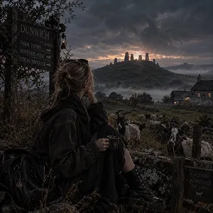
Данвич: экотур
В целом тур в Данвич понравился, хотя ожидала от сельской местности немного больше развлечений — после восьми вечера здесь буквально нечем заняться. Особенно расстроило, что экскурсию на Сентинел-Хилл отменили из-за «неблагоприятных условий», хотя погода была отличная. В следующий раз, пожалуй, поеду летом — надеюсь, хотя бы козы будут менее агрессивными.
-
Эшфордский турнир
Минус вайб, самый горячий принц и наследник трона выбыл из турнира в первом же поединке. А сам турнир очень веселый, много активностей, кукольный театр - топ! Берите с собой перекус, на фудкорте огромные очереди
-
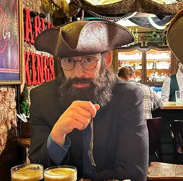
Кулак первых людей
Совершали восхождение на Кулак Первых людей в рамках корпоративного тимбилдинга. Это однозначно не для слабых духом: совершенно никакой инфраструктуры, туалетов нет, замёрзли, некоторые простыли. Мы в полном восторге, спасибо организаторам! Гендир уже забронировал нам на следующий год спелеологическую экспедицию в Морию!
-
Хогвартс (обзорная)
Брали экскурсию по Хогвартсу. Замок шикарный, лестницы живут своей жизнью, туалеты — с привидениями, а один школьный призрак всю дорогу жаловался на подростков. Минус: на ужине еда появляется из воздуха, но кофе почему-то нет
-
Семь столиц Вестероса
Семь столиц Вестероса Винтерфелл, Орлиное Гнездо, Риверран, Утес Кастерли, Хайгарден, Штормовой Предел, Солнечное Копье, ПайкПутешествие в Вестерос прошло великолепно. Покатались на драконе, с высоты посмотрели на белых ходоков, заглянули за Стену. Красиво, атмосферно, местами прохладно. Из минусов: Железный трон оказался неудобным, свадьбы слишком шумные, а у дракона ручная кладь оплачивается отдельно. Зато сервис огонь. Буквально. Пять звёзд. Вернёмся, если ... к следующему сезону кто-нибудь ещё останется в живых.
-
Анк-Морпорк
Ездили в Анк-Морпорк на гастрономический тур. Еда великолепная, порции большие, кошелёк после ужина похудел быстрее меня. Отдельное спасибо Гильдии воров за честный чек и оперативное обслуживание
-
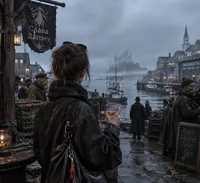
Иннсмут
Иннсмут: морской курорт с семейным сюрпризом ИннсмутКогда увидела в турах Иннсмут, я тут же оформила бронь. Это было великолепно! В местном баре удалось встретить правнука Зедока Аллена, Билла Аллана, и пропустить с ним стаканчик виски. Очень колоритный мужчина — правда, почему-то всё время пристально на меня смотрел, возможно, я ему кого-то напомнила). На лодочке покатались до ... Рифа Дьявола. Красивейшее место! Вода, конечно, какая-то подозрительно тёмная - Тихий океан как никак! Номер в Гидмен-Хаус попался очень неплохим, с видом на залив и центральную площадь. Из минусов — ночью соседи странно бродили за дверью и несколько раз пытались её открыть, но я заложила дверь стульями. Местные жители своеобразные: странная кожа, слегка выпученные глаза и какая-то необычная форма головы. Зато очень приветливые - на улицах постоянно желают друг другу здоровья и что-то говорят про Дагона. Я сначала не поняла, но потом тоже стала отвечать «Слава Дагону» — не хотелось показаться невежливой. В общем, рекомендую Иннсмут всем любителям спокойного морского отдыха, старинных городков и аутентичного местного колорита. Слава Дагону! Обязательно вернусь ещё раз, когда найду паспорт.
-
Татуин
Летали на Татуин, обещали пляжный отдых и две луны. Пляжа не обнаружили, зато песок был абсолютно везде: в багаже, в еде и в жизненных планах. Зато видели джав и почти купили дроида, который оказался слегка бракованным. В следующем году отправлю сюда тещу!
Часто задаваемые вопросы
Как забронировать тур?
Выберите подходящий тур в каталоге, укажите количество путевок, выберите тип страховки при необходимости и нажмите кнопку «Отправить заявку». Наш менеджер свяжется с вами, подтвердит детали путешествия и объяснит, как пройти через портал без потери багажа.
Что входит в стоимость тура?
В стоимость входят предварительная консультация, трансфер, проживание и услуги профессионального гида. Дополнительные расходы — например, аренда дракона, покупка светового меча или защитного амулета — оплачиваются при желании отдельно. Также есть возможность дополнительно приобрести стандартную или расширенную страховку (для некоторых направлений крайне рекомендуется).
Подходят ли ваши туры для семейного путешествия?
Можно, если в карточке тура указана категория «можно с детьми». Мы заранее указываем уровень опасности и предупреждаем о встречах с чудовищами, древними богами, драконами и других особенностях маршрута.
Нужна ли виза?
Всё зависит от выбранного мира и направления. Для некоторых туров понадобится виза, межгалактический паспорт, разрешение на использование магии или официальное разрешение на посещение от местного повелителя.
Что делать, если тур отменили из-за нападения дракона, орды орков или конца света?
Мы предложим перенос тура, альтернативный маршрут или возврат средств согласно условиям бронирования. Если конец света оказался временным, тур можно будет продолжить после восстановления инфраструктуры. Если нападение оказалось частью экскурсии, оно будет отмечено в программе как «непредвиденное, но впечатляющее событие».
Можно ли заказать тур под ключ?
Конечно. По вашему запросу мы организуем всё путешествие: билеты, трансфер, проживание, питание, гида, страховку, рекомендации о покупке сувениров и максимально безопасное возвращение домой. Вам останется только собрать вещи и не опоздать к порталу.
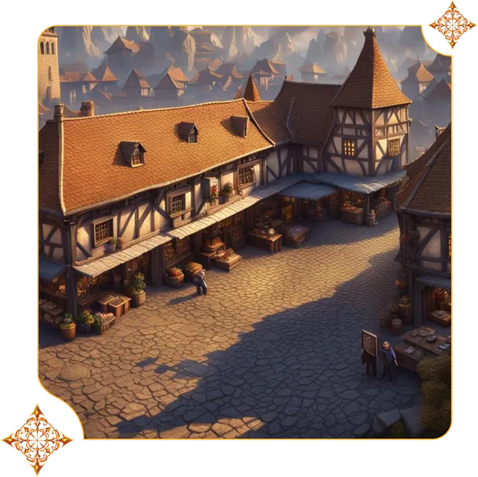